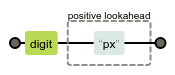
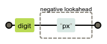

1. 环视(Look around)
肯定环视(positive lookaround)允许在主模式之前(lookbehind)或之后(lookahead)匹配一个分组，而不将其包含在结果中。
否定环视(negative lookarounds)指定一个不能在主模式之前(lookbehind)或之后(lookahead)匹配的分组。
1.1. 肯定顺序环视(positive lookahead) - (?=ABC)
肯定，即不做排除匹配。顺序，即往前(右)看，看主模式之后。
示例 -
\d(?=px)

1.2. 否定顺序环视(negative lookahead) - (?!ABC)
否定，即做排除匹配。顺序，即往前(右)看，看主模式之后。
示例 -
\d(?!px)

1.3. 肯定逆序环视(positive lookbehind) - (?<=ABC)
肯定，即不做排除匹配。逆序，即往后(左)看，看主模式之前。
示例 -
(?<=px)\d
1.4. 否定逆序环视(negative lookbehind) - (?<!ABC)
否定，即做排除匹配。逆序，即往后(左)看，看主模式之前。
示例 -
(?<!px)\d
1.5. keep out - \K
丢弃到 \K 目前为止的匹配，保持文本匹配到返回匹配。
示例 -
o\Kbar- 匹配字符串
foobar中的bar。
- 匹配字符串